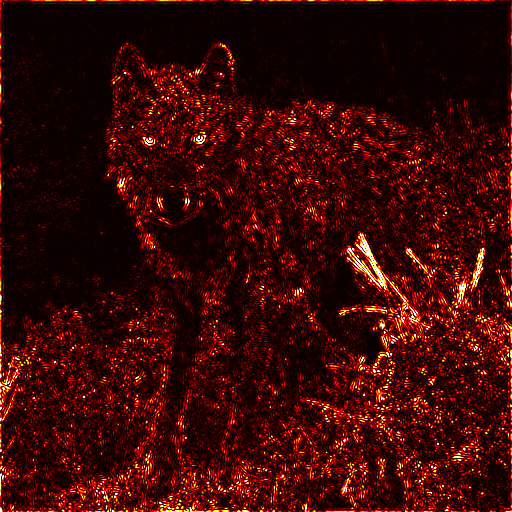

Research

Saliency Thresholds in Neural Code and its Relation to the Power-Law, Gaussian, and Lambert W Function
NeurIPS 2025 Workshop on Symmetry and Geometry in Neural Representations
TLDR: How does the brain calculate visual saliency?
[Paper]
Image/GIF placeholder
Evolutionary Fashion
Research Project
TLDR: Can we evolve fashion through open-ended algorithms?
Previously
RESEARCH
Spectral Bias & Saddle Points
Is spectral bias correlated to saddle point drops in the loss landscape?
PAPER
Continuum of Algorithms
How does the brain compute physical reasoning?
TOOL
Swati AI
Why are research papers so hard to read?
VISUAL
C. Elegans Connectome
What does the connectome look like on a 3D plane?
STARTUP
Zyntora
Can we make a virtual real estate social media app?